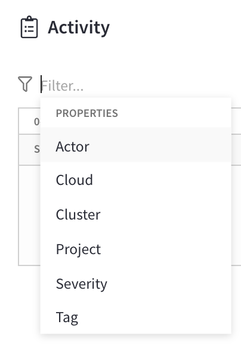

Activity Explorer
The Activity Explorer provides an audit trail of events that bring transparency to user activity and cluster performance.
Activity from the organization and projects you are a member of can be viewed in the Activity Explorer. This provides you with insight into user actions and cluster activity. It can also give details and actionable recommendations to help resolve cluster issues before they impact downstream applications.
Event Types
The Activity Explorer includes two primary event types:
| Event Type | Description |
|---|---|
Info |
User-driven alerts where every user action within Couchbase Capella that creates, updates, or removes a service generates an event. These provide a complete audit trail of user activity within a Capella organization. |
Warning and Critical |
Every organization and cluster has a set of monitors that observe the impact that connected applications have on their Capella cluster and send alerts before potential service-impacting events occur. Each monitor has a Warning and Critical value that gauges the severity of the issue. These event types include a detailed description of why the alert triggers and any recommended remediation actions. When these event types are actively firing, guided actions are available to resolve the issue. |
Viewing the Activity Explorer
The activity in an organization and projects you are a member of can be viewed and actioned from the Activity tab in the main navigation. This tool displays a summary of all events within a chosen timespan in a table format.
The Activity Explorer displays the following fields about each item:
| Field | Description |
|---|---|
Summary |
A brief description of the activity. Clicking on the summary opens a fly-out that includes details about the selected event. |
Resource: |
The resource where this event occurred. Resources can include specific tenants, projects, and clusters. |
Actor |
Who initiated the event. |
Timestamp |
When the event occurred. This includes the date, time (local to you), and if it happened today, yesterday, or a number of days from now. |
More Options (⋮) |
An ellipsis icon (⋮) on each row enables you to view more information, raise a support ticket, or complete an action to address the associated event. |
Filtering Activity
Filtering in the Activity Explorer enables you to filter down to show only events specific to a cloud and cluster, severity type (Info, Warning, or Critical), and tag (alert, availability, billing, maintenance, performance, or security). You can display only the activity that occurred in a specific date range based on your current timezone.
Apply smart filtering
-
From the Activity tab, click the Filter field above the list of activities.
This opens a menu of filtering properties.
 -
Click the property type you wish to begin filtering with.
Another menu shows a list of filtering properties based on the first option you choose.
-
Click the secondary property you wish to apply to the filter.
The Activity Explorer automatically refreshes to show the results of the filter.
-
Repeat the above steps to add more filtering criteria and narrow down the filtering results further.
You can quickly remove any applied filter by clicking the small x in the filter description.
|
Choose a date range
-
From the Activity tab, above the list of activities, click the start date and time (leftmost) date picker.
This opens a calendar date picker.
-
Click the date where you want to start showing activity.
This automatically opens a time picker.
-
Choose an hour of the day from where you want to start showing activity.
Note that the time picker uses the 24-hour clock. If you wish to select an hour from 1:00 PM to 12:00 AM, use the inner-most options.
-
Choose a five-minute interval in the selected hour where you want to start showing activity.
The Activity Explorer automatically refreshes to reflect the new start time.
-
Repeat the above steps using the end date and time (rightmost) date picker to choose an ending date.
By default, the end date and time is set to your current date and time.